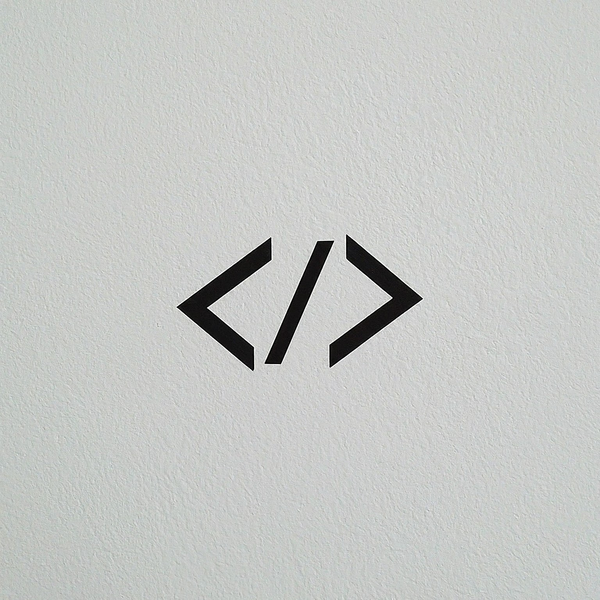

Fase 1 - Editor HTML
Essa é a fase de introdução ao HTML! Aqui, você vai aprender os conceitos básicos enquanto cria uma página simples. Insira inputs, veja a página mudar dinamicamente e confira o código que está criando.
Essa é a fase de introdução ao HTML! Aqui, você vai aprender os conceitos básicos enquanto cria uma página simples. Insira inputs, veja a página mudar dinamicamente e confira o código que está criando.